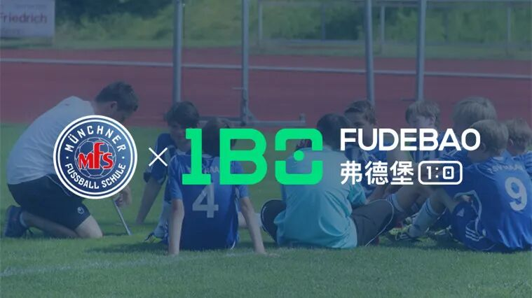
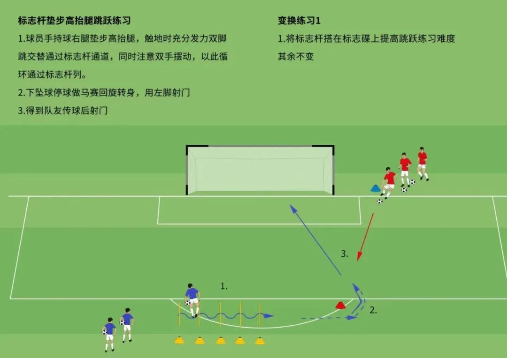
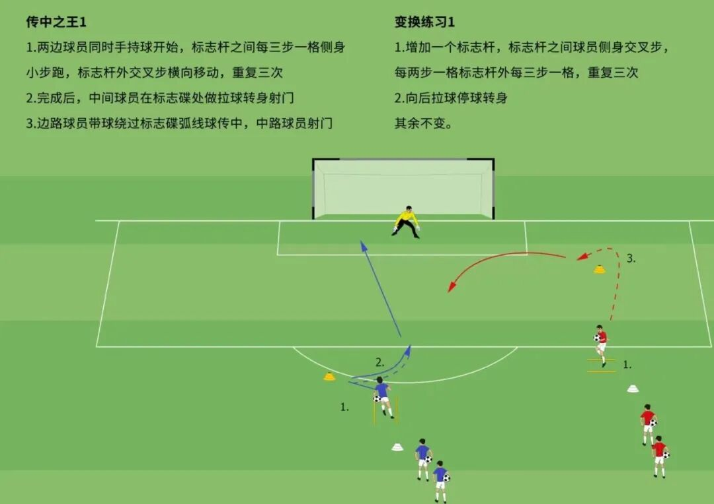

界外球和传中抢点是足球比赛中常见的战术场景，然而在传统的训练中，由于场地和人员的限制，这两个环节的训练往往难以集中进行，训练效率低下，而且容易让球员感到枯燥乏味，尤其是年龄较小的球员难以集中注意力。如何将这两个重要环节有效地融入日常训练，并提升训练效率和趣味性，成为了教练们需要认真思考的问题。

针对这一问题，我们提出以下训练方案，通过巧妙利用常规训练中的碎片时间，将界外球和传中抢点的练习有机地融入其中，不仅提高训练效率，还能增强训练趣味性。
“
界外球练习：将捡球时间变为训练时间
传统的训练中，球员完成器材练习后往往需要射门，然后捡球，再到队尾排队。我们可以利用这个捡球的空档时间进行界外球练习。
具体操作方法如下：
-
在完成器材练习后，球员进行射门。
-
球门旁的队友准备接球，并准备掷界外球。
-
球员射门后，接球门旁队友通过掷界外球的方式将球掷出，球员完成第二脚射门。
-
球员捡球后，迅速走到球门旁，将球掷给后面的球员，然后再去队尾排队。

如图一所示，这种练习方式不仅节省了捡球的时间，还将界外球的掷球与停球练习结合起来，让原本枯燥的器材练习变得更加生动有趣。
“
传中抢点练习：融入常规训练环节
传中抢点练习的融入方式与界外球练习类似，同样可以利用常规训练中的碎片时间。例如，在进行传球练习时，可以将传球方式改为半高球传球，让球员练习传中球的落点控制和抢点技术。

如图二所示，球员在进行传球练习时，可以将球传到对方球员的区域，对方球员通过跑位和跳跃完成传中球的抢点练习。这种练习方式不仅能够提高传中球的精度和落点控制，还能锻炼球员的跑位意识和空中球的抢点能力。
“
发散思维：多种练习方式融入日常训练
除了上述两种练习方式外，我们还可以发散思维，将更多练习方式融入日常训练中。例如，在进行二过一配合练习时，可以将传球方式改为高球或半高球，让球员练习高球的停球和二过一配合。
通过以上训练方式的巧妙运用，我们可以有效地将界外球和传中抢点练习融入到日常训练中，提升训练效率和趣味性，让球员在轻松愉快的氛围中掌握关键技能。
“
总结
在足球训练中，灵活运用碎片时间，将界外球和传中抢点练习融入到常规训练中，可以有效提升训练效率，增强训练趣味性，帮助球员更好地掌握比赛中的关键技能。同时，这种训练方式也体现了足球训练的“精细化”和“灵活化”，为球员的全面发展奠定了坚实的基础。
更多教案及慕尼黑足球学校训练心得，请访问一比零足球小程序。

文字与图片版权归各自权利人所有；排版根据抓取内容整理。